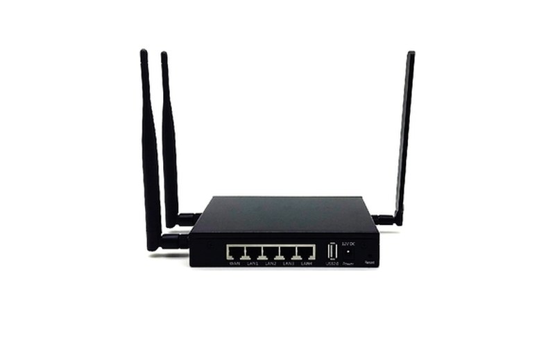
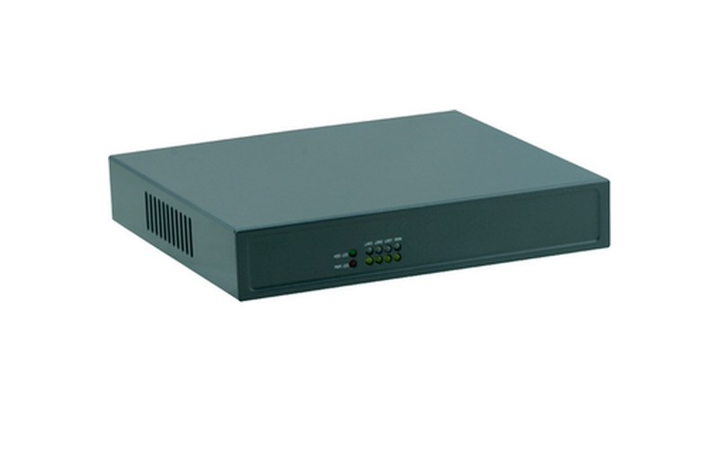

CPE-50支店 · 店舗
| WAN 接続方式 | 固定 IP · PPPoE · 4G |
| インターネットスループット | 500 Mbps+ |
| SD-WAN 暗号化スループット | 50 Mbps |
| 導入モード | ルーター · ブリッジ · バイパス · インライン |
拠点の分布、業務の重要度、ご予算に合わせて設計し、通常は複数の方式を組み合わせます。基幹拠点は専用線、支社は SD-WAN といった構成です。
インターネット回線上に WAN を構築し、従来の専用線よりコストを抑えます。一元管理で、機器が届けばすぐに開通できます。
キャリアのバックボーン上に構築するレイヤー 3 の閉域網。分離性と安定性に優れ、スター型・メッシュ型・多階層構成に対応します。
VPLS や VXLAN over EVPN により、すべての拠点を同一 LAN のようにつなぎます。
イーサネット専用線や MSTP などの専有回線。帯域は必要に応じて設定し上限はなく、通常 10〜20 日で開通します。
コントローラーが証明書、トンネル ID、QoS ポリシーを一括配信。PE ノードは水平方向に拡張でき、CPE はバイパス、インライン、ルーター、ブリッジの各モードで導入できます。
← スワイプで全体構成を表示 →
DPI で 200 以上のアプリケーションを識別し、アプリケーション、ドメイン、IP 範囲ごとに出口を制御します。
FEC によりパケットロスを大幅に低減し、4G/LTE 回線でも安定した通信を保ちます。
設定は一元配信。機器をつなぐだけでオンラインになり、配送が済めば即開通です。
トポロジー、トラフィック、遅延、パケットロスをリアルタイムに表示し、異常時は即座にメールで通知します。
複数キャリアのブロードバンドと 4G/LTE が互いにバックアップし、障害時は自動で切り替えます。
証明書ベースの暗号化トンネルで、地域間のデータを安全に保ちます。

| WAN 接続方式 | 固定 IP · PPPoE · 4G |
| インターネットスループット | 500 Mbps+ |
| SD-WAN 暗号化スループット | 50 Mbps |
| 導入モード | ルーター · ブリッジ · バイパス · インライン |

| WAN 接続方式 | 固定 IP · PPPoE · 4G |
| インターネットスループット | 1 Gbps+ |
| SD-WAN 暗号化スループット | 500 Mbps |
| 導入モード | ルーター · ブリッジ · バイパス · インライン |
モバイル端末は OS 標準の L2TP over IPsec で接続でき、クライアントのインストールは不要です。スマート DNS が最適な PoP へ自動で振り分けます。機器画像はイメージです。ポート数や外観は実際に納品する機器に準じます。
数百店舗をマルチキャリアのブロードバンドと 4G バックアップで接続し、本社の CRM、VoIP、クラウドと安定して同期します。
中国の支社を海外本社や地域データセンターと接続し、アプリケーションごとの制御で重要な通信を優先します。
出張者や海外駐在員一人ひとりにアカウントを発行。社内システムへは暗号化ネットワーク経由、その他の通信は現地からインターネットへ抜けます。
拠点の数と所在地、各拠点の既存回線、主な業務システム（ERP、CRM、VoIP など）と求められる安定性をお知らせください。それをもとにネットワークを設計します。
SD-WAN 機器は現地で電源を入れるだけで稼働するため、開通時期は主に配送次第です。国内のポイント・ツー・ポイント専用線は通常 10〜20 日で開通します。
SD-WAN はインターネット回線を利用し、従来の専用線よりコストを抑えられるため、店舗や支店に適しています。MPLS-VPN やポイント・ツー・ポイント専用線は分離性が高く品質も安定しており、中核拠点に適しています。多くの企業は両方を組み合わせ、中核拠点は専用線、支店は SD-WAN としています。
必ずしも必要ではありません。uXconnect の CPE はルーター、ブリッジ、バイパス、インラインの各導入モードに対応しており、既存ネットワークに合わせて接続方法を選べます。詳細は設計段階で決定します。
はい。テスト機器を無償で設置し、実際の業務トラフィックで性能をご確認いただけます。
開通から日々の運用まで、すべての回線を見守ります。
遅延・パケットロス・帯域がしきい値を超えると即時にアラートを出し、エンジニアが自ら調査します。
すべてのご依頼を一つの窓口で受け付け、進捗をいつでも確認できます。
遅延、パケットロス、トラフィックの統計を毎月ご報告します。
4・8・12 時間ごとに経営層までエスカレーション。ご要望に応じて 2 時間以内に現地対応します。
拠点の所在地と業務内容をお知らせください。ネットワークを設計し、テスト機器を無料で設置して実際のトラフィックで性能を検証できます。